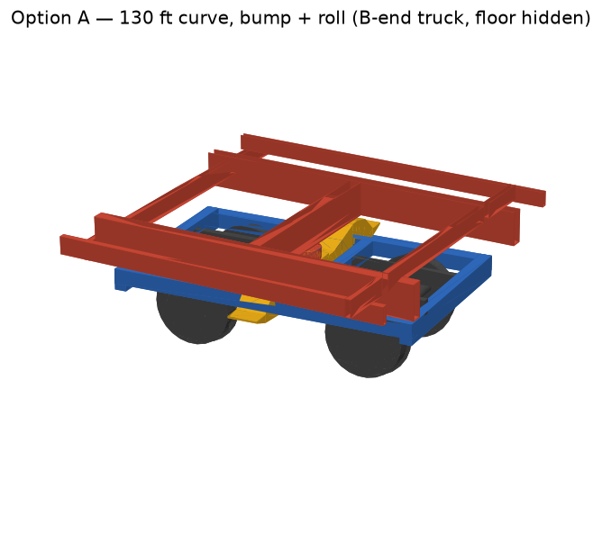
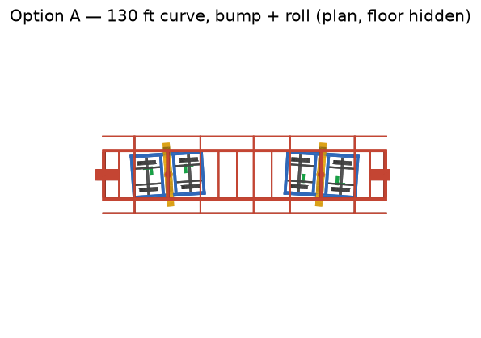
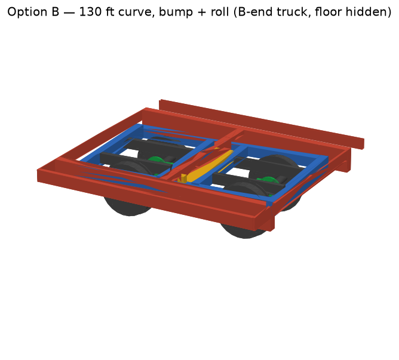
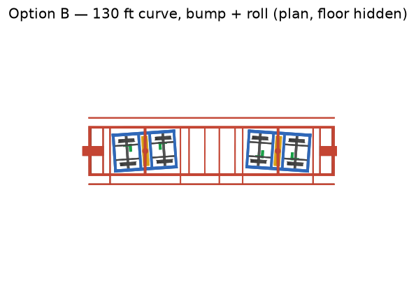
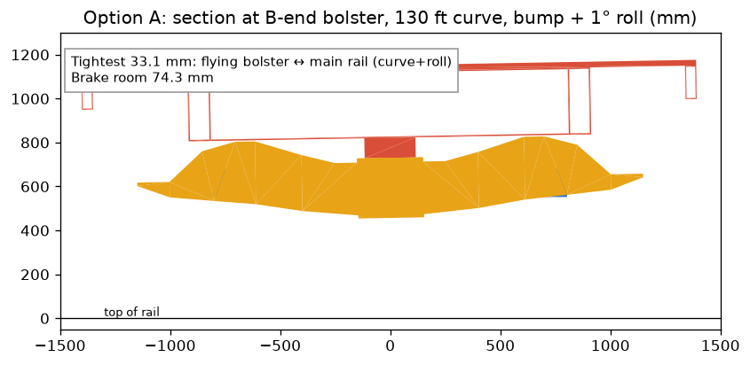
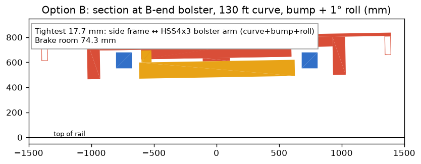
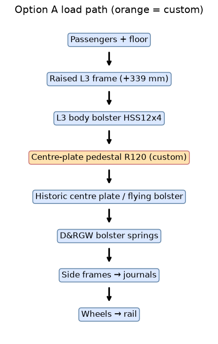
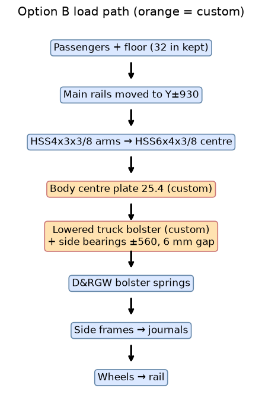

D&RGW trucks under the coach (DF1)
Pick B Keep the 32 in floor. New low bolster. Measure a real truck first.
On the 130 ft curve
Option A – raise coach 339 mm


Option B – keep floor, new bolster


Spin them: 3D viewer → "DF1 option A/B on 130 ft curve".
Tightest spot


How the weight gets to the rail


Side by side
| Option A | Option B | |
|---|---|---|
| Floor (loaded) | 1152 mm (platform 805 – boarding fails) | 813 mm (same as now) |
| Coupler / glad-hands | 889 / 1144 mm (tender 550 – mismatch) | 550 / 805 mm (same) |
| Tightest gap, all 9 cases | 33.1 mm flying bolster ↔ main rail | 17.7 mm side frame ↔ bolster arm |
| Brake room (caliper ↔ wheel) | 74.3 mm | 74.3 mm |
| Crossmembers X1125 / X3475 | Clear – raised with frame | Moved to X860 / X3770 (40 mm min) |
| Wheel load (limit 16.6 kN) | 18.70 kN – over. Needs truck ≤ 1145 kg | 18.50 kN – over. Needs truck ≤ 1226 kg or rated journals/wheels |
| Added steel | +185 kg | +23 kg |
Truck mass is a 2000 kg guess. Weigh one.
Key measurement
On a real D&RGW truck: the loaded centre-plate and side-bearing height (planned 730 ±15 mm), and the truck's weight.
Custom parts
B: low truck bolster, side bearings, centre plates, brake disc hub and caliper adapter. A: pedestal, goose-neck drawbars, extra stair treads. Everything else is stock HSS.
Other trucks
C5 (new 1200 mm truck) and EQ3 (C5 variant) both fit the current bolster. Not picked.
Check before cutting steel
- Bolster and girder stress and fatigue (8000 laps)
- Centre plate and side bearing stress; side-bearing gap and roll
- D&RGW spring rates and loaded height
- Truck weight, journal and wheel rating vs the wheel-load limit
- Brake disc hub and caliper mount
- Coupler match, side swing, wheel profile, engineer review
Model: PF-C310 underframe STEP (F7 r5). Bump ±25/±10 mm and roll ±1° assumed.